مباريات مباشرة
تابع المباريات لحظة بلحظة مع تحديث فوري للنتائج والأحداث.
النسخة الجديدة — تحديث ToFi X Tv 2026
استمتع بمتابعة المباريات المباشرة والأخبار الرياضية وترتيب البطولات وإحصائيات اللاعبين والقنوات الرياضية والأفلام والمسلسلات من خلال تطبيق واحد سريع ومتطور.
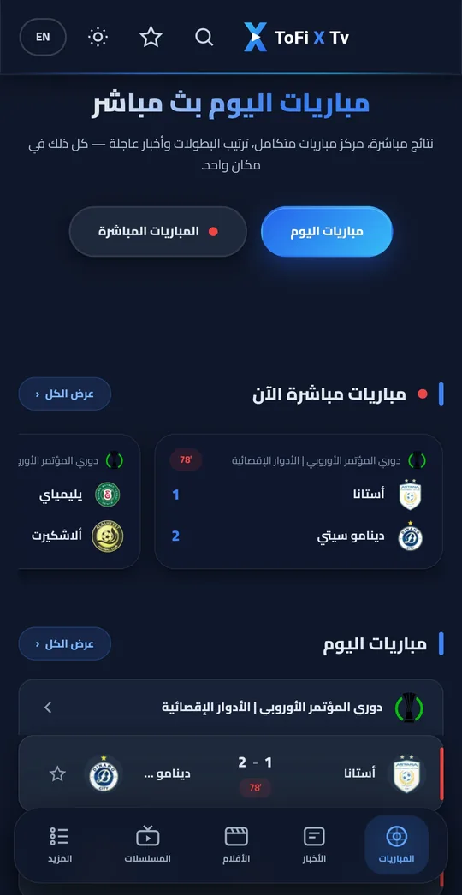
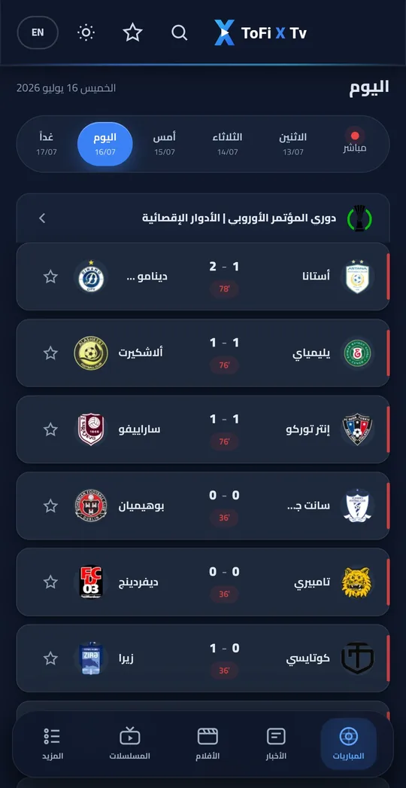
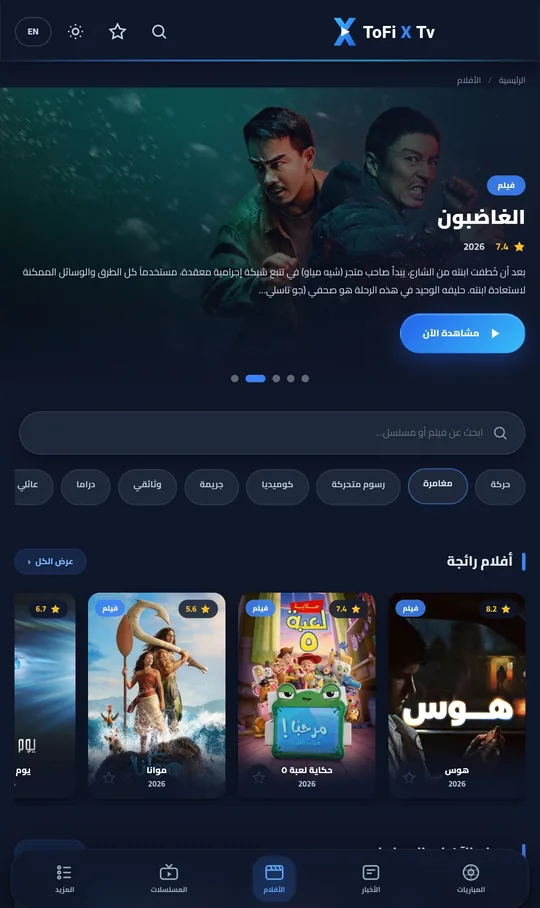
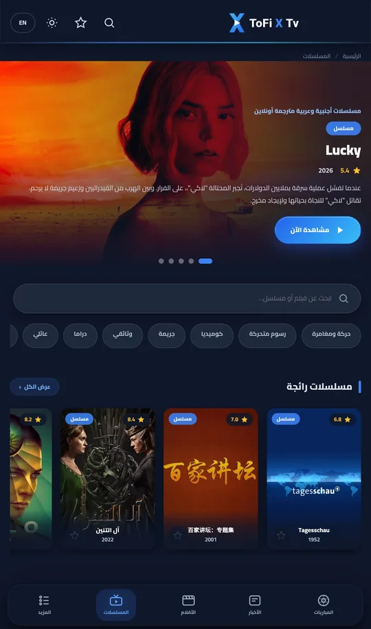
لماذا ToFi X Tv؟
من صافرة البداية حتى تتر النهاية — رياضة وترفيه بتجربة واحدة متكاملة وسريعة.
تابع المباريات لحظة بلحظة مع تحديث فوري للنتائج والأحداث.
تغطية محدثة على مدار الساعة لأهم الأخبار والانتقالات.
جميع الدوريات والبطولات الكبرى في مكان واحد.
جداول ترتيب محدثة أولًا بأول لكل البطولات.
أرقام وتفاصيل دقيقة لأداء اللاعبين والهدافين.
باقة قنوات رياضية بجودة عالية وتشغيل مستقر.
تشكيلة واسعة من الأفلام مع تصنيفات متعددة.
مواسم كاملة وحلقات جديدة تصلك أولًا بأول.
اعثر على أي مباراة أو فيلم أو مسلسل في ثوانٍ.
احفظ فرقك وقنواتك ومحتواك المفضل للوصول السريع.
واجهة داكنة مريحة للعين مصممة للمشاهدة الطويلة.
تصميم عصري 2026 سلس وسهل الاستخدام.
أداء فائق وتشغيل فوري حتى على الاتصالات المتوسطة.
تنبيهات لحظية بالأهداف وبداية المباريات وأهم الأخبار.
من داخل التطبيق
شاشات فعلية من التطبيق بالعربية والإنجليزية — بدون أي صور دعائية.
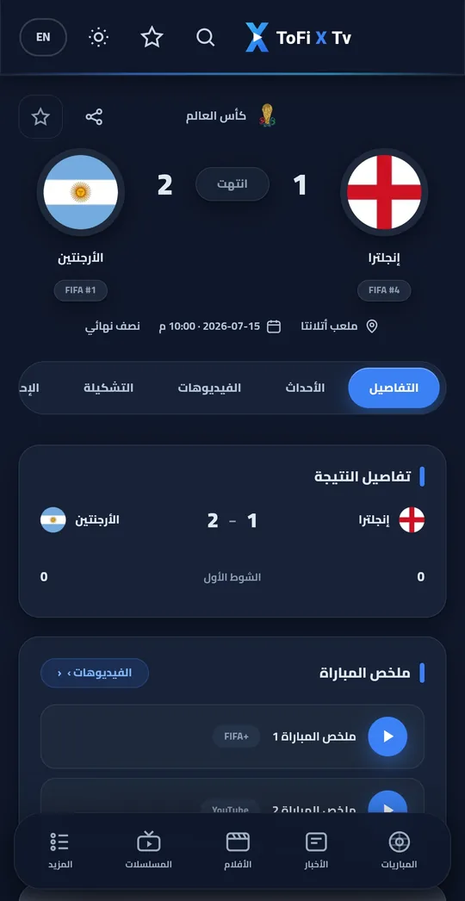
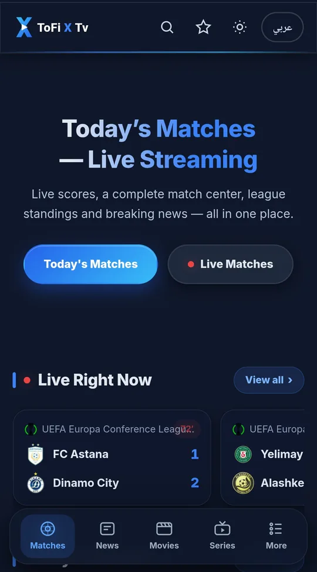
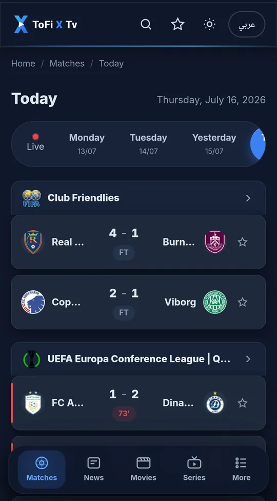
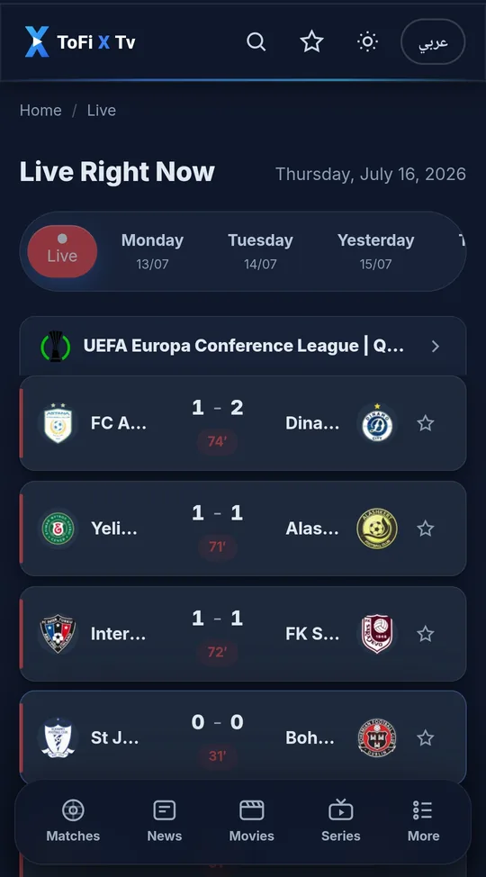
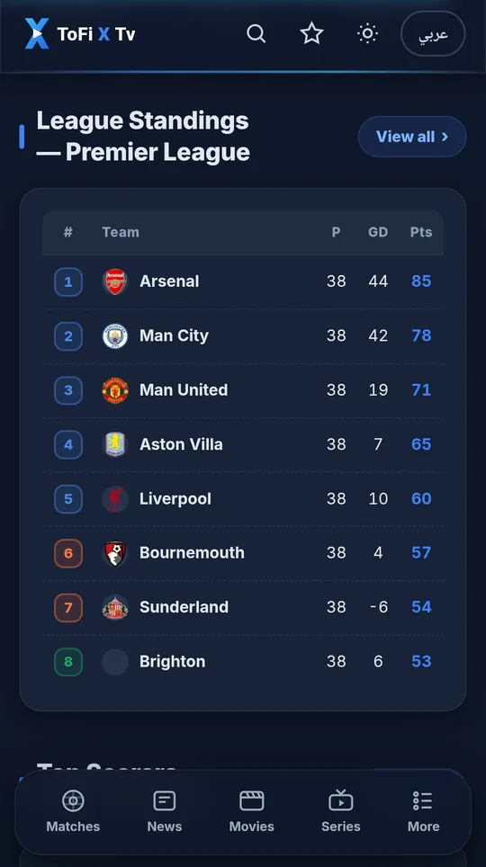
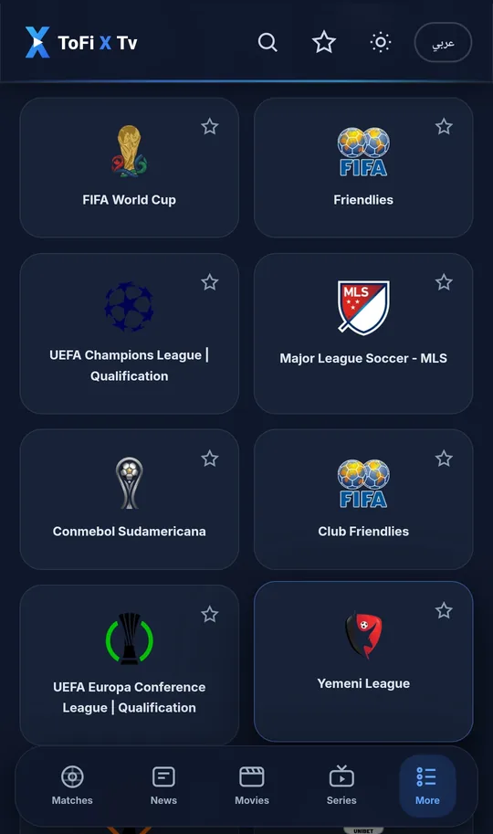
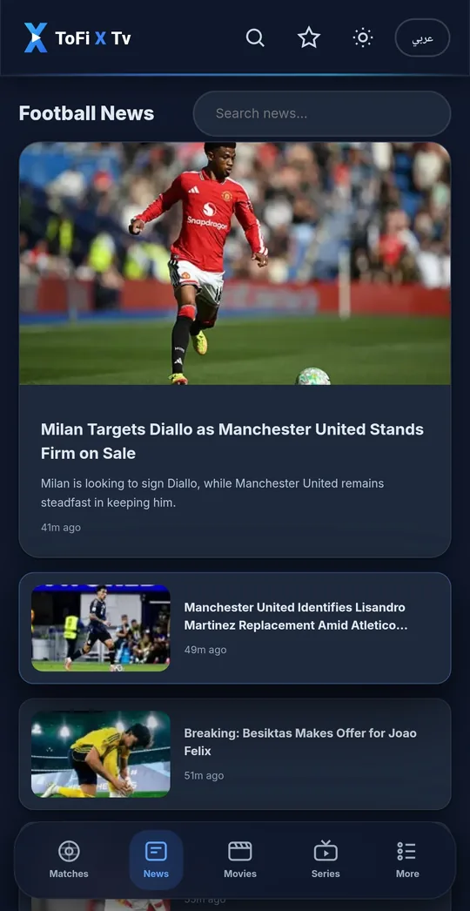
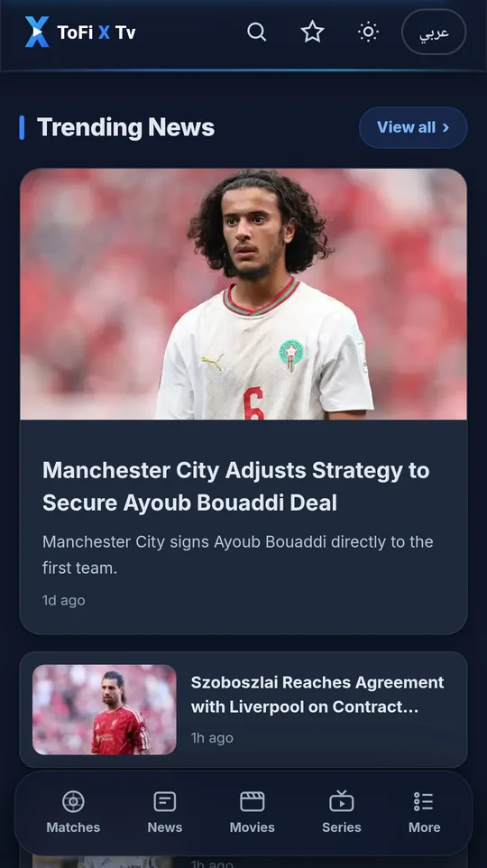
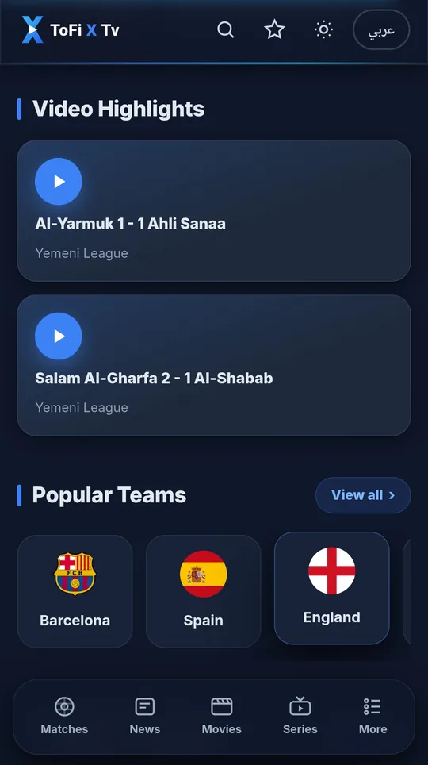
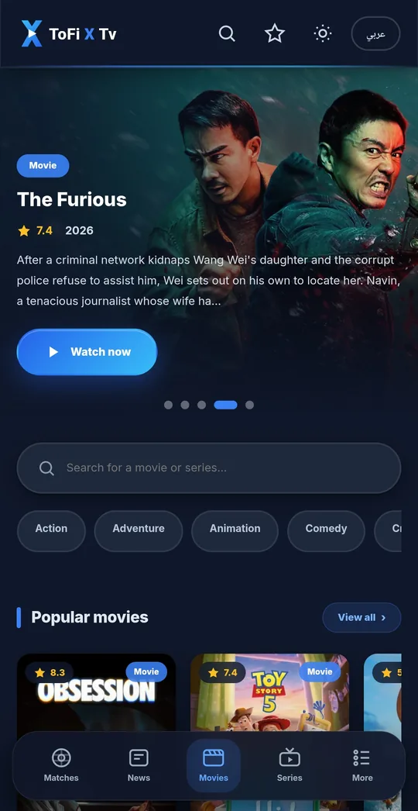
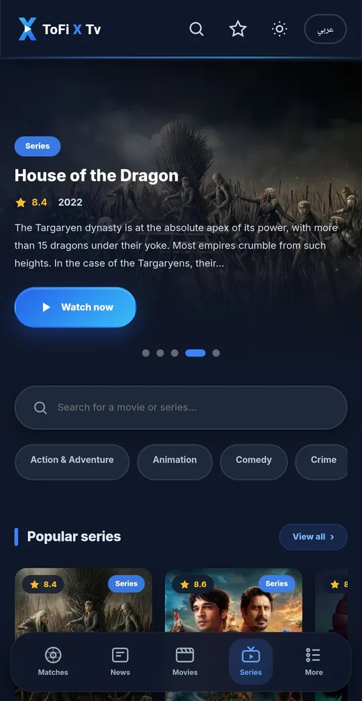
ابدأ في أقل من دقيقة
أربع خطوات بسيطة تفصلك عن المشاهدة — مع كود التفعيل الجاهز للنسخ.
بعد التحميل والتثبيت، افتح تطبيق ToFi X Tv وستظهر لك شاشة التفعيل.
اكتب كود التفعيل الخاص بك في مربع النص داخل التطبيق.
راجع الكود وتأكد من إدخاله بشكل صحيح قبل المتابعة.
اضغط على «Play now» وابدأ المشاهدة فورًا.
كود التفعيل الحالي
الصق الكود في حقل التفعيل داخل التطبيق ثم اضغط تشغيل.
كل ما تحبه في تطبيق واحد — مباريات مباشرة، أخبار، بطولات، أفلام ومسلسلات.
مساعدة سريعة
كل ما تحتاج معرفته عن تحميل ToFi X Tv وطريقة التفعيل وكود التفعيل.
تواصل معناToFi X Tv (توفي إكس تيفي) منصة متكاملة على أندرويد لمتابعة المباريات المباشرة والنتائج اللحظية والأخبار الرياضية وترتيب البطولات وإحصائيات اللاعبين والقنوات الرياضية، إضافة إلى مكتبة أفلام ومسلسلات — كل ذلك في تطبيق واحد سريع بواجهة عربية وإنجليزية.
حمّل النسخة الجديدة ToFi X Tv 2026 مباشرة من رابط التحميل الرسمي apk.tofi-xtv.com ثم ثبّت التطبيق على جهازك وابدأ المشاهدة.
افتح التطبيق، أدخل كود التفعيل في مربع النص، تأكد من إدخاله بشكل صحيح، ثم اضغط زر التشغيل «Play now». راجع قسم طريقة التفعيل بالخطوات المصورة.
كود تفعيل ToFi X Tv الحالي هو 1212 — يمكنك نسخه بضغطة واحدة من قسم طريقة التفعيل أعلاه.
نعم، تحميل تطبيق ToFi X Tv مجاني بالكامل من الموقع الرسمي ورابط التحميل الرسمي دون أي رسوم.
نعم، يوفر التطبيق متابعة المباريات المباشرة بنتائج لحظية ومركز مباراة متكامل يشمل التشكيلات والإحصائيات وترتيب البطولات والقنوات الرياضية.
نعم، قسم أخبار رياضية محدث على مدار الساعة يغطي أبرز المستجدات والانتقالات وملخصات المباريات.
نعم، يضم التطبيق مكتبة أفلام ومكتبة مسلسلات مع تصنيفات متعددة وبحث متقدم ونظام مفضلة إلى جانب المحتوى الرياضي.